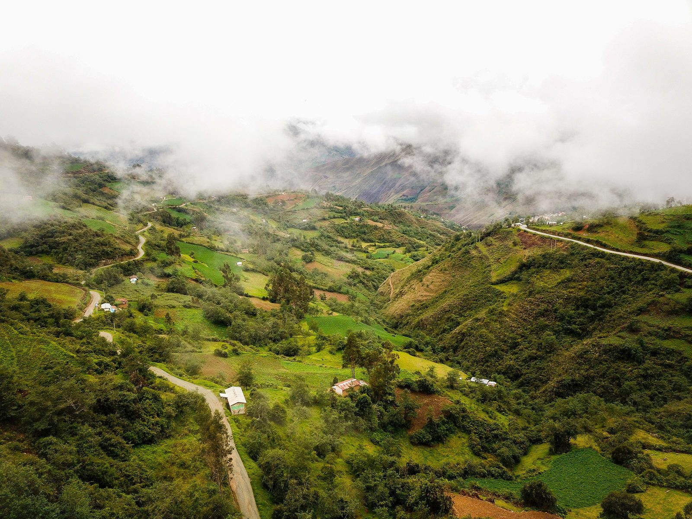

Cinco años de cambios en el sistema alimentario: los miramos juntos
Celebrando los cambios que sembramos juntos. Aquí están la agenda en vivo, las herramientas de cada jornada y la dinámica por mesas.
¿Cómo usar este portal?
Mire la agenda
La agenda indica en vivo qué toca ahora, quién conduce y con qué herramienta.
Abra la herramienta
Cada sesión tiene su herramienta: se abre aquí mismo y guarda lo escrito en este equipo.
Participe con su mesa
Escanee el código QR, elija el color de su mesa, responda y vote desde su celular.
La ruta de los dos días
Lo que el programa se propuso: seis resultados
Los cambios que identifiquemos se vinculan con estos resultados. El análisis usa cuatro criterios: impacto, sostenibilidad, eficacia y género.
«Esto no es un examen al programa ni a las personas: es una conversación para aprender. Lo que no funcionó vale tanto como lo que sí».
Programa de las dos jornadas
Toque una sesión para ver el objetivo, el paso a paso y las herramientas. El botón del cronómetro proyecta el tiempo de la sesión.
Las herramientas del taller
Herramientas de facilitación (H1–H22) y de documentación (D1–D5). Las marcadas como «Interactiva» se abren aquí y guardan lo escrito en este equipo; las demás muestran su ficha y su formato.
Tu voz cuenta: participa desde tu celular
La dinámica en vivo por mesas: el miércoles 25 para identificar los cambios y lo que no se logró, y el jueves 26 para los aprendizajes.
- Escanee el código o abra el enlace.
- Escriba su nombre y elija el color de su mesa.
- Responda, vote (un voto) y vea las prioridades de su mesa.
Requiere internet. Si falla la conexión, el facilitador usa la versión de una sola pantalla.
Productos de la consultoría
Panel de trabajo del equipo consultor
El panel de «Trabajemos juntos» pide la clave de administrador. Las demás herramientas son de libre acceso.